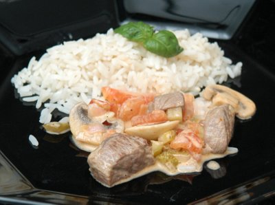

| Zutaten für 4 Personen: | |
| 600 g | Rindsfiletspitz oder -Huft |
| 2 | kleine Tomaten |
| 2 | Schalotten |
| 200 g | Champignons |
| 1 El | Zitronensaft |
| 1 | Gewürz- oder Salzgurke |
| 20 g | Bratbutter |
| 2 Tl | Mehl |
| 1 Tl | Paprika |
| 1 Prise | Cayennepfeffer |
| Salz | |
| Pfeffer | |
| 1 dl | trockener Weisswein |
| 1 dl | kräftige Fleischbouillon |
| 150 g | Crème fraîche |
| 10 g | Butter |
| 2 Tl | Cognac |
| 1 Zweig | Dill |
Das Rindfleisch in Würfel oder Streifen schneiden.
Die Tomaten in der Rundung kreuzweise einritzen. Zehn Sekunden in kochendes Wasser geben, kalt abschrecken, häuten, halbieren und entkernen. Dann in kleine Würfel schneiden.
Die Schalotten fein hacken.
Die Champignons mit einem Pinsel säubern, den Stiel frisch anschneiden. Anschliessend mit dem Eierschneider blättrig schneiden. Sofort mit dem Zitronensaft mischen, damit sie sich nicht verfärben.
Die Gurke in kleine Würfel schneiden.
Die Bouillon anrühren.
In einer beschichteten Bratpfanne die Bratbutter erhitzen. Das Fleisch in Portionen darin kurz und kräftig anbraten.
Alles Fleisch wieder zurück in die Pfanne geben und mit Mehl überstäuben. Unter Wenden hell rösten.
Dann würzen und mit dem Weisswein ablöschen. (Soll das Fleisch hier drin bleiben?) Bei mittlerer Hitze einkochen lassen, Bouillon und Crème fraîche beifügen und auf kleiner Stufe nur noch köcheln lassen.
In einer zweiten Pfanne die Butter warm werden lassen und die Schalotten darin glasig dünsten.
Tomaten und Champignons beifügen und kurz mitdünsten. Mit Salz und Pfeffer leicht würzen.
Alles zum Fleisch geben und auch die Gewürzgurkenwürfel beifügen, gut mischen.
Mit Cognac abschmecken und Dillspitzen darüber streuen.
Dazu Rösti, Reis oder breite Nudeln servieren.
Paprika nie mitbraten, weil es sonst verbrennt und bitter wird. Dafür das Mehl richtig rösten, damit die Sauce eine schöne Farbe bekommt.
Geschnetzeltes Fleisch niemals vor, allenfalls während dem Braten würzen.
Geschnetzeltes Fleisch stets in Portionen anbraten. Der Pfannenboden soll nur gerade mit einer Schicht Fleisch bedeckt sein. Wird zu viel Fleisch aufs Mal angebraten, zieht es Wasser, lässt sich dann nicht mehr braten und wird zäh.
Anstatt Tomaten je 1/2 rote und grüne Peperoni fein würfeln und mit den Champignons dünsten.
Das Mehl weglassen, dafür gebundene Bratensauce (anstelle der Bouillon) verwenden.
So wird das Gericht leichter: Mit Sauer Halbrahm oder Saucen-Halbrahm binden (dann das Mehl weglassen)
Es lohnt sich für dieses Gericht Filet oder Huft zu nehmen, denn bei dieser Zubereitungsart wird das Fleisch nur kurz ("à la minute") gebraten.
Brückenbauer 8/95
Hat sehr gut geschmeckt am 26.7.2009. Sehr ausgewogene Sauce die Gewürzgurke gibt eine erfrischende Note. Mir scheint das Fleisch will nicht beim Einkochen der Sauce in der Pfanne bleiben das es sonst zäh wird. RE